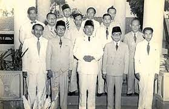
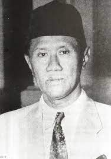
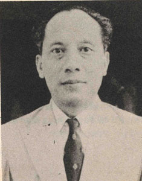
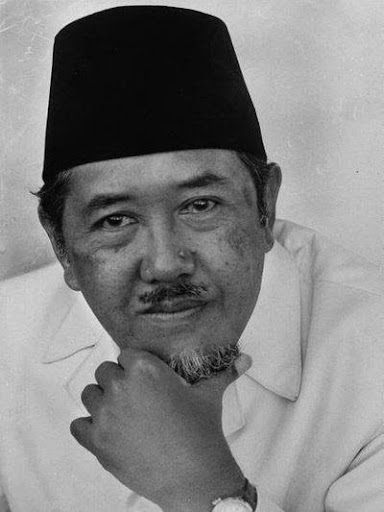
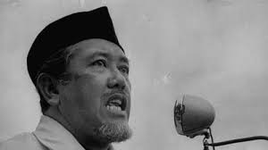
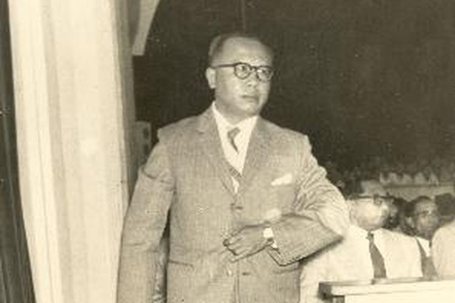

1) Kabinet Natsir 2) Kabinet Sukiman-Suwirjo

Pertama, ada kabinet Natsir yang langsung dipimpin oleh Mohammad Natsir selaku
perdana menteri. Natsir adalah tokoh politik dari partai Masyumi - partai Islam
terbesar pada saat itu. Natsir menjabat mulai 6 September 1950 hingga 21 Maret 1951

Kedua, ada kabinet Sukiman-Suwirjo yang merupakan koalisi politik dari dua partai,
yakni partai Masyumi dan PNI. Di kabinet ini, Sukiman Wirjosandjojo bertindak sebagai
kepala pemerintahan dan Suwirjo sebagai wakil kepala pemerintahan. Kabinet ini
mengudara mulai 27 April 2951 hingga 3 April 1952.
3) Kabinet Wilopo 4) Kabinet Ali Sastromidjojo I

Ketiga, ada kabinet Wilopo yang memimpin dari 3 April 1952 hingga 31 April 1953.
Kabinet ini sangat cepat demisioner karena berbagai dinamika politik yang menghantuinya.
Misalnya, muncul gerakan separatisme di Indonesia dan dianggap bersalah dalam kejadian
Tanjung Morawa di Sumatera Utara.

Keempat, ada kabinet Ali I yang memerintah sejak 31 Juli 1953 hingga 24 Juli 1955.
Salah satu program kabinet yang cukup membekas adalah program persiapan pemilihan umum untuk
dewan konstituante dan Dewan Perwakilan Rakyat (DPR).
5) Kabinet Burhanuddin Harahap 6) Kabinet Ali Sastromidjojo II

Kelima, ada kabinet Burhanuddin Harahap yang menjalankan pemerintah sejak 12 Agustus 1955
hingga 24 Maret 1956. Ini merupakan kabinet hasil dari koalisi yang besar, karena terjalin
dengan hampir seluruh partai yang ada parlemen.

Keenam, untuk kedua kalinya Ali sastromidjojo menjadi perdana menteri mulai 24 Maret 1956
hingga 14 Maret 1957. Kabinet Ali II ini adalah hasil dari koalisi politik dari tiga partai,
yaitu PNI, Masyumi, dan juga NU.
7) Kabinet Djuanda

Terakhir, ada kabinet Djuanda yang dipimpin oleh Djuanda Kartawidjaja yang memiliki 28 menteri.
Kabinet terakhir dalam era demokrasi parlementer ini mulai memerintah sejak 9 April 1957 hingga
6 Juli 1959 sebelum diubahnya sistem pemerintahan menjadi demokrasi terpimpin oleh Soekarno.